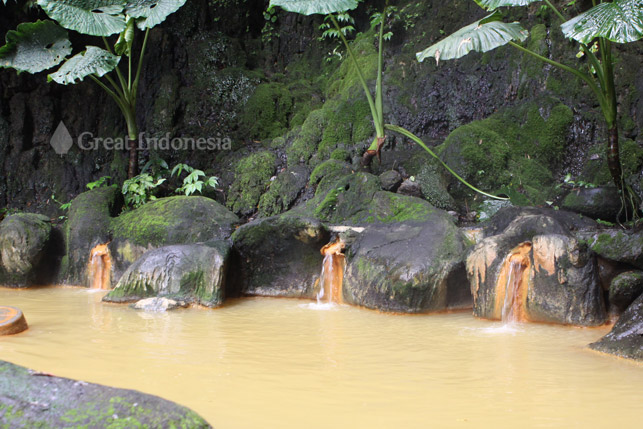

Ganesa Brilliant Ananto
X TJKT
Sumber: infopurwokerto.com/keindahan-pancuran-telu-di-lokawisata-baturaden
Pancuran Telu merupakan salah satu objek wisata alam yang terletak di kawasan Baturaden, Kabupaten Banyumas, Jawa Tengah. Tempat ini dikenal karena sumber air panas alaminya yang memiliki khasiat kesehatan. Observasi ini dilakukan untuk memahami lebih dalam tentang kondisi, fasilitas, serta potensi wisata dari Pancuran Telu.
Observasi Pancuran Telu dilakukan menggunakan pendekatan kualitatif dan kuantitatif untuk memperoleh informasi yang mendalam mengenai kondisi, fasilitas, dan potensi wisata dari objek wisata ini. Tujuannya dilakukan observasi ini adalah untuk mengetahui kondisi fisik dan lingkungan Pancuran Telu, mengidentifikasi fasilitas yang tersedia di Pancuran Telu, dan menilai potensi wisata dan manfaat kesehatan dari Pancuran Telu. Mengidentifikasi fasilitas yang tersedia di Pancuran Telu. Menilai potensi wisata dan manfaat kesehatan dari Pancuran Telu. Metode yang digunakan meliputi:
Tujuannya untuk mengidentifikasi kondisi fisik dan lingkungan Pancuran Telu serta fasilitas yang tersedia. Observasi dilakukan dengan mengunjungi lokasi selama dua hari berturut-turut, pada waktu yang berbeda, yaitu pagi dan sore, untuk mendapatkan gambaran yang lebih komprehensif tentang aktivitas dan suasana di lokasi.
Mendapatkan informasi dari berbagai pihak terkait pengalaman, pengelolaan, dan manfaat Pancuran Telu. Wawancara dilakukan dengan 20 pengunjung yang dipilih secara acak untuk mendapatkan pandangan mereka tentang pengalaman dan kepuasan saat berkunjung ke Pancuran Telu. Pertanyaan mencakup alasan kunjungan, fasilitas yang digunakan, dan efek relaksasi yang dirasakan.
Menganalisis data yang dikumpulkan untuk mengidentifikasi tren dan pola yang relevan dengan tujuan observasi.
Setelah observasi maka dituliskan hasilnya yaitu:
Pancuran Telu terletak di kawasan hutan pinus yang sejuk dan asri. Sumber air panas alami ini mengalir melalui tiga pancuran utama, yang menjadi asal nama "Telu" yang berarti tiga. Air di Pancuran Telu memiliki kandungan belerang yang tinggi, yang dipercaya memiliki khasiat untuk kesehatan kulit dan terapi relaksasi.
Ada banyak fasilitas di Pancuran Telu, antara lain Kolam rendam, Jalur trekking, Gazebo, Tempat parkir dan Warung makan, dan lain-lain.
Pancuran Telu memiliki potensi wisata yang besar karena terdapat keindahan alam, Khasiat kesehatan, dan Aksesibilitas.
Pancuran Telu merupakan destinasi wisata yang menawarkan pengalaman unik dengan sumber air panas alami dan pemandangan alam yang indah. Fasilitas yang disediakan cukup memadai dan dapat mendukung kenyamanan pengunjung. Dengan potensi wisata yang besar dan manfaat kesehatan yang ditawarkan, Pancuran Telu layak untuk dikunjungi dan dikembangkan lebih lanjut sebagai salah satu andalan wisata di Kabupaten Banyumas.